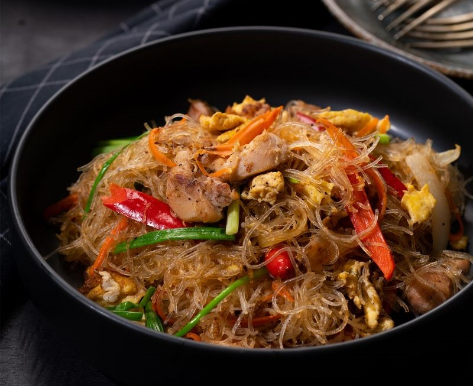

Stir-fried Glass Noodles

| Ingredients |
Amount |
| chicken |
200g |
| dried glass noodles |
160g |
| onion |
1 pcs |
| shredded carrot |
1 pcs |
| eggs |
2 pcs |
| paprika |
1 pcs |
| soy sauce |
2 tbsp |
| teriyaki sauce |
2 tbsp |
| vegetable oil |
2 tbsp |
- Step 1: Combine the chicken with the soy sauce and teriyaki sauce and set aside while you prepare the noodles
- Step 2: Combine the chicken with the marinade ingredients and set aside while you prepare the noodles
- Step 3: Heat half the vegetable oil in a wok or large frying pan
- Step 4: Heat half the vegetable oil in a wok or large frying pan. Add the onion and stir-fry for a minute. Add the chicken and stir-fry for another 2-3 minutes or until the chicken is almost cooked. Add the carrot and paprika and stir-fry for another minute or until the chicken is cooked. Spread the ingredients out to make some space in the middle of the pan. Add the remaining oil into the space, then pour in the eggs. Spread the eggs out and allow them to set.Add the noodles and the stir-fry sauce and toss until well combined
- Step 5: Add the noodles and the stir-fry sauce and toss until well combined
- Step 6: Divide the noodles among plates and serve